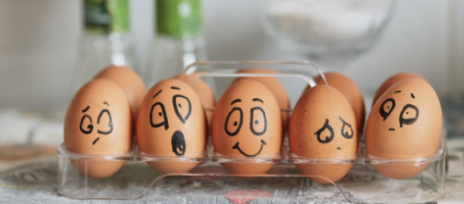

Блог
- Все
- Самооценка и самопринятие
- Self
- Чувства и эмоции
- Тревога
- Упражнения
- Психология питания
- Насилие
- Личное здоровье

Самооценка и самопринятие
Self
Эмоциональное выгорание – стадии и симптомы, методы восстановления и профилактики
Изначально термин «эмоциональное сфер и относился...
21.08.2021

Self
Как не утонуть в тревоге и управлять своими страхами
Один из самых важных навыков, которые может дать работа с психотерапевтом - умение в разных ситуациях по-разному обходиться ...
11.08.2021
Самооценка и самопринятие
Self
Эмоциональное выгорание – стадии и симптомы, методы восстановления и профилактики
Изначально термин «эмоциональное сфер и относился...
21.08.2021
Self
Как не утонуть в тревоге и управлять своими страхами
Один из самых важных навыков, которые может дать работа с психотерапевтом - умение в разных ситуациях по-разному обходиться ...
11.08.2021